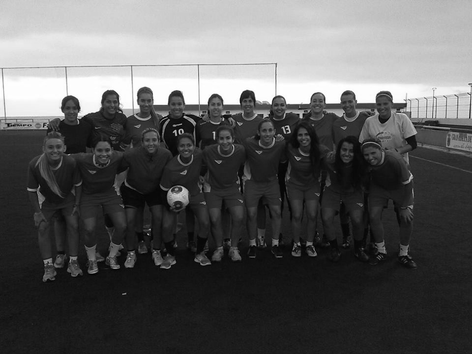
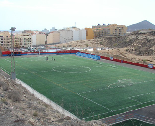

Historia del Club
Quan es va fundar
La UD Granadilla Tenerife Egatesa es funda el 2013 gràcies a la iniciativa de Sergio Batista, Andrés Clavijo i Eduardo Chinea. Es reuneixen per planificar el debut de l'equip a la segona divisió canària, subgrup de Tenerife, que comptarà amb una plantilla de jugadores procedents dels millors equips de Canàries. La columna vertebral d'aquest conjunt procedia de l'CD Toll de el Pi que, recentment, acabava de disputar el play-off d'ascens a primera divisió perdent a Granada.
Dades del club
Temporades en la Primera Divisió: 5
- Millor lloc: 4t (2017/18) (2018/19)
- Pitjor lloc: 7º (2015/16)
Temporades en la Segona Divisió: 2
- Millor lloc: 1r (2013/14) (2014/15)
- Pitjor lloc: -
Participacions en Copa de la Reina: 4 (2016) (2017) (2018) (2019)
Participacions internacionals: -
Promoció a Primera Divisió: 2 (2013/14) (2014/15)
Instalacions
Actualment la UDG Tenerife utilitza el camp municipal La Hoya del Pozo, situat al poble costaner de El Médano
Equipacio